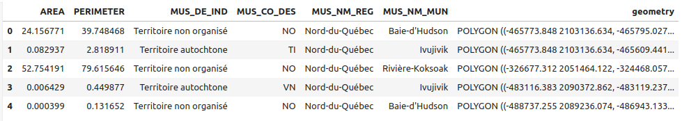
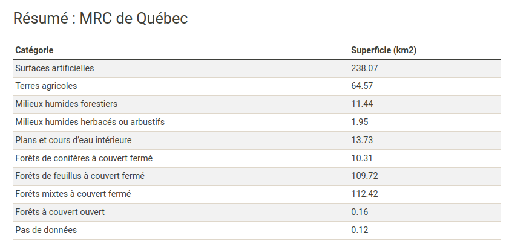

Articulation de différents langages (R, JavaScript et Python) pour la géovisualisation avec Quarto
Atelier Sageo, Québec, Juin 2023
Python
Le langage Python
Python : un langage polyvalent, interprété et multi-paradigme
De plus en plus utilisé pour la science des données
- Un écosystème robuste pour différents domaines d’application scientifiques


Écosystème pour le géospatial
Données vectorielles
- Bindings Python de GDAL/OGR (GDAL/OGR contributors, 2022)
- Fiona (Gillies, Buffat, et al., 2023) - I/O (wrapper de haut niveau autour d’OGR)
- Shapely (Gillies, Wel, et al., 2023) - bindings Python de GEOS (GEOS contributors, 2021)
- Pyproj (Snow, Whitaker, et al., 2023) - bindings Python de PROJ (PROJ contributors, 2021)
- Geopandas (Jordahl et al., 2020) - Étend les
DataFrames de pandas (The pandas development team, s. d.)


Le package GeoPandas
Un projet open source pour faciliter le travail avec des données géospatiales vectorielles en Python. GeoPandas étend Pandas pour permettre de disposer d’un type de colonne géométrique et pour permettre d’effectuer des opérations spatiales. Les opérations géométriques sont réalisées avec shapely, les accès en lecture / écriture aux fichiers utilisent fiona et la visualisation utilise matplotlib.

- Utilisation :
Avec la fonction read_file :
import geopandas as gpd
nybb = gpd.read_file(file_path)Avec la méthode plot des GeoDataFrame :
nybb.plot()
Affichage :
print(nybb.crs)epsg:2263Transformation :
nybb_geo = nybb.to_crs('EPSG:4326')En utilisant la bibliothèque contextily :
import contextily as cx
ax = nybb.to_crs('EPSG:3857').plot()
cx.add_basemap(ax, source='https://{s}.tile.openstreetmap.fr/osmfr/{z}/{x}/{y}.png')
ax.set_axis_off()
ax
Simplement en utilisant l’attribut centroid des GeoDataFrame :
nybb.centroid.plot()
Simplement en utilisant l’attribut boundary des GeoDataFrame :
nybb.boundary.plot()
En utilisant la méthode buffer des GeoDataFrame :
buff_nybb = nybb.buffer(3000)ax = buff_nybb.plot(color="red")
nybb.plot(ax=ax, color="aliceblue")
En utilisant la méthode dissolve des GeoDataFrame :
# On peut utiliser dissolve(by="nom_colonne") si on veut aggréger selon les valeurs d'une colonne
agg = nybb.dissolve()
agg.plot()
En utilisant la méthode intersection des GeoDataFrame :
from shapely import wkt
point = wkt.loads('Point(998769.1146889535 174169.7607268664)')
intersecting = nybb.intersection(point.buffer(35000))/home/mthh/env-quarto/lib/python3.10/site-packages/shapely/set_operations.py:133: RuntimeWarning: invalid value encountered in intersection
return lib.intersection(a, b, **kwargs)ax = nybb.plot()
ax = intersecting.plot(ax=ax, color="red")
ax
Données raster
- Rasterio (Gillies et al., 2013) :
- lecture / écriture de raster (wrapper de haut niveau autour de GDAL)
- données représentées sous forme d’
arrayNumPy - reprojection
- resampling
- virtual files
- etc.
- Rasterstats :
- résumer des données raster sur la base de géométries vectorielles
- extraction de valeurs à un point précis
- xarray (Hoyer et al., s. d.) et rioxarray (Snow, Brochart, et al., 2023):
- xarray pour travailler avec des tableaux multidimensionnels étiquetés
- rioxarray pour ouvrir des jeux des données raster avec rasterio, les stocker dans le format de xarray, et avoir accès à différentes fonctionnalités de rasterio
- moins “rustique” que d’utiliser rasterio seul / dépend de l’usage souhaité
Le package Rasterio
Exemple d’utilisation :
import rasterio as rio
with rio.open('data/MODIS_ARRAY.nc') as f:
# Métadonnées :
metadata = f.meta
# Lire toutes les bandes :
data = f.read()
# Ou f.read(1) pour lire seulement la première bande- Un dictionnaire de méta-données + un tableau NumPy contenant la (ou les) bande(s) :
print(metadata){'driver': 'netCDF', 'dtype': 'int16', 'nodata': -28672.0, 'width': 200, 'height': 200, 'count': 1, 'crs': CRS.from_wkt('PROJCS["unknown",GEOGCS["unknown",DATUM["unknown",SPHEROID["unknown",6371007.181,0]],PRIMEM["Greenwich",0,AUTHORITY["EPSG","8901"]],UNIT["degree",0.0174532925199433,AUTHORITY["EPSG","9122"]]],PROJECTION["Sinusoidal"],PARAMETER["longitude_of_center",0],PARAMETER["false_easting",0],PARAMETER["false_northing",0],UNIT["metre",1,AUTHORITY["EPSG","9001"]],AXIS["Easting",EAST],AXIS["Northing",NORTH]]'), 'transform': Affine(231.6563582639561, 0.0, -7274009.649486291,
0.0, -231.65635826375018, 5050108.61015275)}print(data)[[[-28672 -28672 -28672 ... 656 656 554]
[-28672 -28672 -28672 ... 694 694 642]
[-28672 -28672 -28672 ... 456 575 642]
...
[ 993 817 817 ... 471 479 498]
[ 893 893 816 ... 479 479 469]
[ 816 816 832 ... 515 469 485]]]Les package xarray et rioxarray
Exemple d’utilisation :
import rioxarray
import xarray
xds = xarray.open_dataarray("./data/MODIS_ARRAY.nc")- Un objet de type
xarray.DataArrayouxarray.Datasetqui contient les différentes méta-données et les données :
xds<xarray.DataArray (y: 200, x: 200)>
[40000 values with dtype=float32]
Coordinates:
* y (y) float64 5.05e+06 5.05e+06 5.05e+06 ... 5.004e+06 5.004e+06
* x (x) float64 -7.274e+06 -7.274e+06 ... -7.228e+06 -7.228e+06
Attributes:
crs: +a=6371007.181 +b=6371007.181 +lon_0=0 +no_defs +proj=sinu +u...
res: [231.65635826 231.65635826]
is_tiled: 0
nodata: -28672.0
transform: [ 2.31656358e+02 0.00000000e+00 -7.27400965e+06 0.00000000e...filled = xds.rio.interpolate_na()En utilisant la méthode plot des objets xarray.DataArray (ici après avoir sélections un subset des données) :
import matplotlib.pyplot as plt
fig = plt.figure(figsize=(15, 5))
ax1, ax2 = (fig.add_subplot(131), fig.add_subplot(133))
xds.isel(x=slice(0, 20), y=slice(0, 20)).plot(ax=ax1)
filled.isel(x=slice(0, 20), y=slice(0, 20)).plot(ax=ax2)
- Affichage :
xds.rio.crsCRS.from_wkt('PROJCS["unknown",GEOGCS["unknown",DATUM["unknown",SPHEROID["unknown",6371007.181,0]],PRIMEM["Greenwich",0,AUTHORITY["EPSG","8901"]],UNIT["degree",0.0174532925199433,AUTHORITY["EPSG","9122"]]],PROJECTION["Sinusoidal"],PARAMETER["longitude_of_center",0],PARAMETER["false_easting",0],PARAMETER["false_northing",0],UNIT["metre",1,AUTHORITY["EPSG","9001"]],AXIS["Easting",EAST],AXIS["Northing",NORTH]]')- Transformation :
xds = xds.rio.reproject("EPSG:6623")clipped = xds.rio.clip(gdf.geometry.values, gdf.crs, drop=False, invert=True)Analyse spatiale
Écosystème de bibliothèques pour l’analyse spatiale PySAL (Python Spatial Analysis Library, Rey et Anselin (2007)) :
- Explorer:
- Analyse exploratoire des données spatiales (package esda)
- Analyse de la dynamique des données spatiales longitudinales (package giddy)
- Mesure des inégalités dans l’espace et dans le temps (package inequality)
- Analyse statistique de motifs ponctuels planaires (package pointpats)
- Mesure de la ségrégation dans le temps et dans l’espace (package segregation)
- Morphométrie urbaine (package momepy)
- Modéliser:
- Régression géographiquement pondérée à plusieurs échelles (package mgwr)
- Modèles linéaires généralisés épars (package spglm)
- Modèles d’interaction spatiale (package spint)
- Modèles de régression spatiale (package spreg)
- Modèles de composantes de variance à corrélation spatiale à plusieurs niveaux (package spvcm)
- Areal interpolation et cartographie dasymétrique (package tobler)
- Accessibilité spatiale (package access)
- Optimisation spatiale (package spopt)

Autres packages utiles …
- Binding Python pour GRASS + Intégration dans les notebooks Jupyter
Pour la cartographie : cartopy ; geoviews et geoplot basés sur cartopy ; PyGMT (selon les usages - pas de solution aussi aboutie que
mapsfpour les cartes réalisées en SHS).

Ressources Python Géospatial
Interaction R ⇄ Python dans Quarto
- Définition de variables dans un chunk R :
a <- 42
b <- list(1, 2, 3)
c <- c(12, 13, 14)- Récupération depuis un chunk Python :
en utilisant la variable r, un point, et le nom de la variable R à récupérer
print(r.a)42.0print(r.b)[1.0, 2.0, 3.0]print(r.c)[12.0, 13.0, 14.0]- Définition de variables dans un chunk Python :
a = 42
b = [1, 2, 3]- Récupération depuis un chunk R :
en utilisant la variable py, un dollar $, et le nom de la variable Python à récupérer
print(py$a)[1] 42print(py$b)[1] 1 2 3Interaction R ⇄ Python dans Quarto (suite)
- Il est possible d’échanger des types plus complexes (
data.frame⇄DataFramepandas, tableau numpy, etc.)
- Depuis un chunk R :
df <- data.frame(
emp_id = c(1:5),
emp_name = c("Rick","Dan","Michelle","Ryan","Jane"),
salary = c(623.3,515.2,611.0,729.0,843.25),
start_date = as.Date(c("2012-01-01", "2013-09-23", "2014-11-15", "2014-05-11", "2015-03-27")),
stringsAsFactors = FALSE
)- Récupération depuis un chunk Python :
df = r.df
print(df.head()) emp_id emp_name salary start_date
0 1 Rick 623.30 2012-01-01
1 2 Dan 515.20 2013-09-23
2 3 Michelle 611.00 2014-11-15
3 4 Ryan 729.00 2014-05-11
4 5 Jane 843.25 2015-03-27- Depuis un chunk Python :
import pandas as pd
import numpy as np
df2 = pd.DataFrame({
"emp_id": list(range(5)),
"emp_name": ["Rick", "Dan", "Michelle", "Ryan", "Jane"],
"salary": [623.3, 515.2, 611.0, 729.0, 843.25],
"start_date": pd.to_datetime(["2012-01-01", "2013-09-23", "2014-11-15", "2014-05-11", "2015-03-27"]),
})
arr = np.array([[12, 47], [34, 90], [23, 19]])- Utilisation depuis un chunk R :
head(py$df2) emp_id emp_name salary start_date
1 0 Rick 623.30 2012-01-01 01:00:00
2 1 Dan 515.20 2013-09-23 02:00:00
3 2 Michelle 611.00 2014-11-15 01:00:00
4 3 Ryan 729.00 2014-05-11 02:00:00
5 4 Jane 843.25 2015-03-27 01:00:00print(py$arr) [,1] [,2]
[1,] 12 47
[2,] 34 90
[3,] 23 19Interaction R ⇄ Python dans Quarto (suite)
Et pour les objets spatiaux ? (sf / geopandas)
Si la conversion
data.frame⇄DataFrameest transparente, il n’en est pas de même pour les dataframe avec une composante spatiale (perte de la dimension spatiale / colonnegeometrycontient désormais …)L’écriture d’une petite function permet de résoudre ça :
from shapely.geometry import shape
import geopandas as gpd
def restore_geodataframe(df, crs, geom_type):
geom = df.geometry.apply(lambda coords: shape({ "type": geom_type, "coordinates": coords }))
gdf = gpd.GeoDataFrame(df.drop(['geometry'], axis=1), geometry=geom)
gdf.set_crs(crs, inplace=True)
return gdfAinsi, les objets sf pourront être convertis en GeoDataFrame ainsi :
mrc = restore_geodataframe(r.mrc, r.crs, "MultiPolygon")
mrc.head() MUS_CO_MRC MUS_NM_MRC MUS_NM_REG geometry
0 01 Communauté maritime des Îles-de-la-Madeleine Gaspésie - Îles-de-la-Madeleine MULTIPOLYGON (((505936.000 400484.000, 503752....
1 02 Le Rocher-Percé Gaspésie - Îles-de-la-Madeleine MULTIPOLYGON (((288282.000 493474.000, 281197....
2 03 La Côte-de-Gaspé Gaspésie - Îles-de-la-Madeleine MULTIPOLYGON (((252570.000 528170.000, 252646....
3 04 La Haute-Gaspésie Gaspésie - Îles-de-la-Madeleine MULTIPOLYGON (((120775.000 563455.000, 122763....
4 05 Bonaventure Gaspésie - Îles-de-la-Madeleine MULTIPOLYGON (((163436.000 501024.000, 187515....resto = restore_geodataframe(r.resto, r.crs, "Point")
resto.head() osm_id name cuisine geometry
0 291667452 Chez Cora NA POINT (-205284.124 320601.265)
1 295803248 Normandin NA POINT (-221931.609 321452.378)
2 345886369 Chez Victor burger POINT (-207712.728 315587.610)
3 386267989 Ly-Hai vietnamese POINT (-207895.478 315365.940)
4 393559700 Mike's italian POINT (-217665.483 319360.818)Python, Quarto et interactivité
Utilisation des widgets Jupyter possible (seulement is utilisation de l’engin de rendu
jupyter, pas avecknitr- i.e. l’inverse des htmlwidgets en R qui ne fonctionne que siknitrest utilisé)Exemple :

- Documentation : https://quarto.org/docs/interactive/widgets/jupyter.html
Exemples d’analyse sur les données du Québec
- Les imports nécessaires :
import numpy as np
import rasterio as rio
import pandas as pd
import geopandas as gpd
import rioxarray
import xarray
from rasterio.warp import calculate_default_transform, reproject, Resampling
from matplotlib import pyplot as plt
from rasterio.plot import show
from rasterio.mask import mask
from rasterstats import zonal_stats, point_query- On récupère les jeux de données et quelques autres infos (SRC, etc.) depuis l’environnement R :
# Le SCR des données
dst_crs = r.crs
# On récupère le jeu de données "mrc" (municipalités régionales de comté)
# et le jeu de données "resto"
mrc = restore_geodataframe(r.mrc, dst_crs, "MultiPolygon")
resto = restore_geodataframe(r.resto, dst_crs, "Point")
reg = mrc.dissolve(by="MUS_NM_REG")
sel = r.sel # Québec
# Chemin du jeu de données raster
# et du fichier contenant les descriptions des catégories
lc_fp = '../../Téléchargements/T01_PROVINCE.tif'
lc_categories_fp = '../../Téléchargements/correspondance_raster_CL_COUV.dbf'- On extrait les entités correspondantes et on les affiche, relativement au reste de la province :
extract = mrc[mrc.MUS_NM_MRC == sel]
ax = mrc.plot(color="lightblue", edgecolor="grey", alpha=0.5, figsize=(16, 12))
ax = reg.plot(ax=ax, color=None, edgecolor="orange", alpha=0.8)
ax = extract.plot(ax=ax, color="red")
ax.set_axis_off()
ax
- Ouverture et reprojection d’un jeu de données raster (avec rioxarray) :
xds = rioxarray.open_rasterio(lc_fp)
xds = xds.rio.reproject(dst_crs)
xds<xarray.DataArray (band: 1, y: 23726, x: 28690)>
array([[[255, 255, 255, ..., 255, 255, 255],
[255, 255, 255, ..., 255, 255, 255],
[255, 255, 255, ..., 255, 255, 255],
...,
[255, 255, 255, ..., 255, 255, 255],
[255, 255, 255, ..., 255, 255, 255],
[255, 255, 255, ..., 255, 255, 255]]], dtype=uint8)
Coordinates:
* x (x) float64 -8.306e+05 -8.305e+05 ... 6.038e+05 6.039e+05
* y (y) float64 1.303e+06 1.303e+06 ... 1.173e+05 1.172e+05
* band (band) int64 1
spatial_ref int64 0
Attributes: (12/13)
AREA_OR_POINT: Area
RepresentationType: THEMATIC
STATISTICS_COVARIANCES: 5.53386940676013
STATISTICS_MAXIMUM: 11
STATISTICS_MEAN: 6.4740178066376
STATISTICS_MINIMUM: 1
... ...
STATISTICS_SKIPFACTORY: 1
STATISTICS_STDDEV: 2.3524177748412
STATISTICS_VALID_PERCENT: 41.95
scale_factor: 1.0
add_offset: 0.0
_FillValue: 255- Affichons le raster reprojeté et l’emprise de la ville de Québec :
# Remplacer les '255' par '0'
xds.data[xds.data == 255] = 0
# Étendue des données
bounds = xds.rio.bounds()
extent = [bounds[0], bounds[2], bounds[1], bounds[3]]
# Création d'une figure vide
fig, ax = plt.subplots(figsize=(16, 12))
# Affichage du raster (attribut 'data' de l'objet xds)
show(xds.data[0], ax=ax, extent=extent, cmap="Set3")
# Affichage de la ville de Québec en rouge par dessus
extract.plot(ax=ax, color='red', edgecolor='red', linewidth=2)
# On enlève l'affichage des axes
ax.set_axis_off()
ax
- Ouverture du fichier DBF qui contient les correspondances entre les codes et les noms des catégories d’utilisation des sols
categories = pd.DataFrame(
gpd.read_file(lc_categories_fp, encoding='utf-8')[['ID', 'CL_COUV', 'Descriptio']])
categories.head(11) ID CL_COUV Descriptio
0 1.0 010000 Surfaces artificielles
1 2.0 020000 Terres agricoles
2 3.0 060000 Milieux humides forestiers
3 4.0 070000 Milieux humides herbacés ou arbustifs
4 5.0 100000 Plans et cours d’eau intérieure
5 6.0 110101 Forêts de conifères à couvert fermé
6 7.0 110102 Forêts de feuillus à couvert fermé
7 8.0 110103 Forêts mixtes à couvert fermé
8 9.0 110200 Forêts à couvert ouvert
9 10.0 000000 Pas de données
10 11.0 000001 En attente de traitement# On va convertir cette DataFrame en un dictionnaire pour l'utiliser
# comme un mapping ID -> Description
categories = {
int(k): v['Descriptio']
for k,v in categories[['ID', 'Descriptio']].set_index('ID').to_dict(orient='index').items()
}
# Bien qu'il y ait une catégorie 'Pas de données' (ID 10)
# certaines cellules ne comportent pas de valeur (nodata, ici avec la valeur 0)
categories[0] = 'Pas de données'
categories{1: 'Surfaces artificielles', 2: 'Terres agricoles', 3: 'Milieux humides forestiers', 4: 'Milieux\xa0humides\xa0herbacés\xa0ou\xa0arbustifs', 5: 'Plans et cours d’eau intérieure', 6: 'Forêts de conifères à couvert fermé', 7: 'Forêts\xa0de\xa0feuillus\xa0à\xa0couvert\xa0fermé', 8: 'Forêts\xa0mixtes\xa0à\xa0couvert\xa0fermé', 9: 'Forêts à couvert ouvert', 10: 'Pas de données', 11: 'En attente de traitement', 12: 'Surfaces artificielles vers terres agricoles', 13: 'Surfaces artificielles vers milieux humides forestiers', 14: 'Surfaces artificielles vers milieux\xa0humides\xa0herbacés\xa0ou\xa0arbustifs', 15: 'Surfaces artificielles vers plans et cours d’eau intérieure', 16: 'Surfaces artificielles vers forêts de conifères à couvert fermé', 17: 'Surfaces artificielles vers forêts\xa0de\xa0feuillus\xa0à\xa0couvert\xa0fermé', 18: 'Surfaces artificielles vers forêts\xa0mixtes\xa0à\xa0couvert\xa0fermé', 19: 'Surfaces artificielles vers forêts à couvert ouvert', 20: 'Surfaces artificielles vers pas de données', 21: 'Surfaces artificielles vers en attente de traitement', 22: 'Terres agricoles vers surfaces artificielles', 23: 'Terres agricoles vers milieux humides forestiers', 24: 'Terres agricoles vers milieux\xa0humides\xa0herbacés\xa0ou\xa0arbustifs', 25: 'Terres agricoles vers plans et cours d’eau intérieure', 26: 'Terres agricoles vers forêts de conifères à couvert fermé', 27: 'Terres agricoles vers forêts\xa0de\xa0feuillus\xa0à\xa0couvert\xa0fermé', 28: 'Terres agricoles vers forêts\xa0mixtes\xa0à\xa0couvert\xa0fermé', 29: 'Terres agricoles vers forêts à couvert ouvert', 30: 'Terres agricoles vers pas de données', 31: 'Terres agricoles vers en attente de traitement', 32: 'Milieux humides forestiers vers surfaces artificielles', 33: 'Milieux humides forestiers vers terres agricoles', 34: 'Milieux humides forestiers vers milieux\xa0humides\xa0herbacés\xa0ou\xa0arbustifs', 35: 'Milieux humides forestiers vers plans et cours d’eau intérieure', 36: 'Milieux humides forestiers vers forêts de conifères à couvert fermé', 37: 'Milieux humides forestiers vers forêts\xa0de\xa0feuillus\xa0à\xa0couvert\xa0fermé', 38: 'Milieux humides forestiers vers forêts\xa0mixtes\xa0à\xa0couvert\xa0fermé', 39: 'Milieux humides forestiers vers forêts à couvert ouvert', 40: 'Milieux humides forestiers vers pas de données', 41: 'Milieux humides forestiers vers en attente de traitement', 42: 'Milieux\xa0humides\xa0herbacés\xa0ou\xa0arbustifs vers surfaces artificielles', 43: 'Milieux\xa0humides\xa0herbacés\xa0ou\xa0arbustifs vers terres agricoles', 44: 'Milieux\xa0humides\xa0herbacés\xa0ou\xa0arbustifs vers milieux humides forestiers', 45: 'Milieux\xa0humides\xa0herbacés\xa0ou\xa0arbustifs vers plans et cours d’eau intérieure', 46: 'Milieux\xa0humides\xa0herbacés\xa0ou\xa0arbustifs vers forêts de conifères à couvert fermé', 47: 'Milieux\xa0humides\xa0herbacés\xa0ou\xa0arbustifs vers forêts\xa0de\xa0feuillus\xa0à\xa0couvert\xa0fermé', 48: 'Milieux\xa0humides\xa0herbacés\xa0ou\xa0arbustifs vers forêts\xa0mixtes\xa0à\xa0couvert\xa0fermé', 49: 'Milieux\xa0humides\xa0herbacés\xa0ou\xa0arbustifs vers forêts à couvert ouvert', 50: 'Milieux\xa0humides\xa0herbacés\xa0ou\xa0arbustifs vers pas de données', 51: 'Milieux\xa0humides\xa0herbacés\xa0ou\xa0arbustifs vers en attente de traitement', 52: 'Plans et cours d’eau intérieure vers surfaces artificielles', 53: 'Plans et cours d’eau intérieure vers terres agricoles', 54: 'Plans et cours d’eau intérieure vers milieux humides forestiers', 55: 'Plans et cours d’eau intérieure vers milieux\xa0humides\xa0herbacés\xa0ou\xa0arbustifs', 56: 'Plans et cours d’eau intérieure vers forêts de conifères à couvert fermé', 57: 'Plans et cours d’eau intérieure vers forêts\xa0de\xa0feuillus\xa0à\xa0couvert\xa0fermé', 58: 'Plans et cours d’eau intérieure vers forêts\xa0mixtes\xa0à\xa0couvert\xa0fermé', 59: 'Plans et cours d’eau intérieure vers forêts à couvert ouvert', 60: 'Plans et cours d’eau intérieure vers pas de données', 61: 'Plans et cours d’eau intérieure vers en attente de traitement', 62: 'Forêts de conifères à couvert fermé vers surfaces artificielles', 63: 'Forêts de conifères à couvert fermé vers terres agricoles', 64: 'Forêts de conifères à couvert fermé vers milieux humides forestiers', 65: 'Forêts de conifères à couvert fermé vers milieux\xa0humides\xa0herbacés\xa0ou\xa0arbustifs', 66: 'Forêts de conifères à couvert fermé vers plans et cours d’eau intérieure', 67: 'Forêts de conifères à couvert fermé vers forêts\xa0de\xa0feuillus\xa0à\xa0couvert\xa0fermé', 68: 'Forêts de conifères à couvert fermé vers forêts\xa0mixtes\xa0à\xa0couvert\xa0fermé', 69: 'Forêts de conifères à couvert fermé vers forêts à couvert ouvert', 70: 'Forêts de conifères à couvert fermé vers pas de données', 71: 'Forêts de conifères à couvert fermé vers en attente de traitement', 72: 'Forêts\xa0de\xa0feuillus\xa0à\xa0couvert\xa0fermé vers surfaces artificielles', 73: 'Forêts\xa0de\xa0feuillus\xa0à\xa0couvert\xa0fermé vers terres agricoles', 74: 'Forêts\xa0de\xa0feuillus\xa0à\xa0couvert\xa0fermé vers milieux humides forestiers', 75: 'Forêts\xa0de\xa0feuillus\xa0à\xa0couvert\xa0fermé vers milieux\xa0humides\xa0herbacés\xa0ou\xa0arbustifs', 76: 'Forêts\xa0de\xa0feuillus\xa0à\xa0couvert\xa0fermé vers plans et cours d’eau intérieure', 77: 'Forêts\xa0de\xa0feuillus\xa0à\xa0couvert\xa0fermé vers forêts de conifères à couvert fermé', 78: 'Forêts\xa0de\xa0feuillus\xa0à\xa0couvert\xa0fermé vers forêts\xa0mixtes\xa0à\xa0couvert\xa0fermé', 79: 'Forêts\xa0de\xa0feuillus\xa0à\xa0couvert\xa0fermé vers forêts à couvert ouvert', 80: 'Forêts\xa0de\xa0feuillus\xa0à\xa0couvert\xa0fermé vers pas de données', 81: 'Forêts\xa0de\xa0feuillus\xa0à\xa0couvert\xa0fermé vers en attente de traitement', 82: 'Forêts\xa0mixtes\xa0à\xa0couvert\xa0fermé vers surfaces artificielles', 83: 'Forêts\xa0mixtes\xa0à\xa0couvert\xa0fermé vers terres agricoles', 84: 'Forêts\xa0mixtes\xa0à\xa0couvert\xa0fermé vers milieux humides forestiers', 85: 'Forêts\xa0mixtes\xa0à\xa0couvert\xa0fermé vers milieux\xa0humides\xa0herbacés\xa0ou\xa0arbustifs', 86: 'Forêts\xa0mixtes\xa0à\xa0couvert\xa0fermé vers plans et cours d’eau intérieure', 87: 'Forêts\xa0mixtes\xa0à\xa0couvert\xa0fermé vers forêts de conifères à couvert fermé', 88: 'Forêts\xa0mixtes\xa0à\xa0couvert\xa0fermé vers forêts\xa0de\xa0feuillus\xa0à\xa0couvert\xa0fermé', 89: 'Forêts\xa0mixtes\xa0à\xa0couvert\xa0fermé vers forêts à couvert ouvert', 90: 'Forêts\xa0mixtes\xa0à\xa0couvert\xa0fermé vers pas de données', 91: 'Forêts\xa0mixtes\xa0à\xa0couvert\xa0fermé vers en attente de traitement', 92: 'Forêts à couvert ouvert vers surfaces artificielles', 93: 'Forêts à couvert ouvert vers terres agricoles', 94: 'Forêts à couvert ouvert vers milieux humides forestiers', 95: 'Forêts à couvert ouvert vers milieux\xa0humides\xa0herbacés\xa0ou\xa0arbustifs', 96: 'Forêts à couvert ouvert vers plans et cours d’eau intérieure', 97: 'Forêts à couvert ouvert vers forêts de conifères à couvert fermé', 98: 'Forêts à couvert ouvert vers forêts\xa0de\xa0feuillus\xa0à\xa0couvert\xa0fermé', 99: 'Forêts à couvert ouvert vers forêts\xa0mixtes\xa0à\xa0couvert\xa0fermé', 100: 'Forêts à couvert ouvert vers pas de données', 101: 'Forêts à couvert ouvert vers en attente de traitement', 102: 'Pas de données vers surfaces artificielles', 103: 'Pas de données vers terres agricoles', 104: 'Pas de données vers milieux humides forestiers', 105: 'Pas de données vers milieux\xa0humides\xa0herbacés\xa0ou\xa0arbustifs', 106: 'Pas de données vers plans et cours d’eau intérieure', 107: 'Pas de données vers forêts de conifères à couvert fermé', 108: 'Pas de données vers forêts\xa0de\xa0feuillus\xa0à\xa0couvert\xa0fermé', 109: 'Pas de données vers forêts\xa0mixtes\xa0à\xa0couvert\xa0fermé', 110: 'Pas de données vers forêts à couvert ouvert', 111: 'Pas de données vers en attente de traitement', 112: 'En attente de traitement vers surfaces artificielles', 113: 'En attente de traitement vers terres agricoles', 114: 'En attente de traitement vers milieux humides forestiers', 115: 'En attente de traitement vers milieux\xa0humides\xa0herbacés\xa0ou\xa0arbustifs', 116: 'En attente de traitement vers plans et cours d’eau intérieure', 117: 'En attente de traitement vers forêts de conifères à couvert fermé', 118: 'En attente de traitement vers forêts\xa0de\xa0feuillus\xa0à\xa0couvert\xa0fermé', 119: 'En attente de traitement vers forêts\xa0mixtes\xa0à\xa0couvert\xa0fermé', 120: 'En attente de traitement vers forêts à couvert ouvert', 121: 'En attente de traitement vers pas de données', 0: 'Pas de données'}- Calculer les statistiques zonales (combien de cellules de chaque type dans la sélection) :
stats = zonal_stats(extract, xds.data[0], affine=xds.rio.transform(), categorical=True, nodata=0)
stats[{1: 95228, 2: 25829, 3: 4574, 4: 778, 5: 5490, 6: 4124, 7: 43887, 8: 44969, 9: 62, 10: 47}]- Traçons un histogramme de ce résultat, en utilisant les noms appropriés des catégories d’utilisation des sols :
# Utilise les noms de catégories du DataFrame `categories`...
x = [categories[int(v)] for v in stats[0].keys()]
# ...et les valeurs que nous venons de calculer avec la fonction `zonal_stats`
height = stats[0].values()
fig, ax = plt.subplots(figsize=(8, 8))
bar_container = ax.bar(x, height)
ax.set_xticklabels(
ax.get_xticklabels(),
rotation=45,
horizontalalignment='right'
)
fig.tight_layout()
ax
- Affichons un petit résumé utilisant des valeurs en m
- Dans quel type d’occupation du sol se trouvent les restaurants précédemment récupérés ?
geoms = resto['geometry'].tolist()
resto["lc"] = [categories[int(x)] for x in point_query(vectors=geoms, raster=xds.data[0], nodata=0, affine=xds.rio.transform())]
resto.head() osm_id name cuisine geometry lc
0 291667452 Chez Cora NA POINT (-205284.124 320601.265) Surfaces artificielles
1 295803248 Normandin NA POINT (-221931.609 321452.378) Surfaces artificielles
2 345886369 Chez Victor burger POINT (-207712.728 315587.610) Surfaces artificielles
3 386267989 Ly-Hai vietnamese POINT (-207895.478 315365.940) Surfaces artificielles
4 393559700 Mike's italian POINT (-217665.483 319360.818) Surfaces artificielles- Quels restaurants ne sont pas situés dans une zone artificialisée ?
selection = resto[(resto.lc != 'Surfaces artificielles') & (resto.lc != 'Pas de données')]
selection osm_id name cuisine geometry lc
68 2395695353 Yuzu sushi sushi POINT (-222424.372 321631.681) Milieux humides forestiers
197 3089591298 Café 47 NA POINT (-211438.971 309903.333) Milieux humides forestiers
209 3222747115 Yuzu Sushi NA POINT (-213715.133 318403.631) Forêts de feuillus à couvert fermé
210 3224167888 Le Subtil NA POINT (-212550.597 319033.410) Forêts de feuillus à couvert fermé
214 3257077054 Ben & Florentine NA POINT (-221125.085 321891.351) Milieux humides forestiers
235 3801921158 Le Commandant italian POINT (-218914.348 315176.377) Forêts mixtes à couvert fermé
287 4726892021 Pidz pizza POINT (-229413.591 325273.771) Plans et cours d’eau intérieure
295 5099196285 Le Bistro Évolution NA POINT (-210863.848 307329.858) Forêts mixtes à couvert fermé
323 5485394052 érablière du chemin du Roy maple;ice_cream;quebec;canadian POINT (-222402.680 308460.059) Milieux humides forestiers
324 5485401715 Quai 1636 regional;french POINT (-216802.399 309187.074) Terres agricoles
355 6643475285 La cage NA POINT (-203039.864 313768.119) Milieux humides herbacés ou arbustifs
371 7816042184 Chez Victor NA POINT (-210673.674 307668.201) Terres agricoles
404 10878153356 Pacini italian POINT (-213819.005 318251.978) Forêts de conifères à couvert fermé
405 10878153357 Yuzu sushi sushi POINT (-213801.047 318254.188) Forêts de feuillus à couvert fermé
420 189982784 Resto-Pub Ryna NA POINT (-211598.938 306756.046) Forêts de feuillus à couvert fermé
467 998906150 Benny & Co. chicken;barbecue;poutine POINT (-213983.922 325706.559) Terres agricolesax = extract.plot(color=None, edgecolor="black")
ax = selection.plot(ax=ax, marker='x', color='red', markersize=8)
ax.set_axis_off()
ax
A vous de jouer üöÄ
Objectif : Comparez l’occupation du sol de l’ensemble de la province du Québec à l’occupation du sol de la MRC de Montréal.
- Vous cherchez à obtenir :
- 2 graphiques en barres (un pour le Québec et un pour la MRC de Montréal)
- un résumé (pourquoi pas en HTML !) de la surface de chaque type d’occupation du sol, comme celui présenté en exemple ci-dessous

- Au début de votre document, vous devez insérer un chunk de code
Rpour préciser la localisation de votre environnement virtuel Python - comme nous utilisonsknitr, c’est ce qui va permettre àreticulatede savoir où chercher les packages Python qui ont été installés pour cet atelier :
```{r}
#| echo: false
library(reticulate)
use_virtualenv("~/env-quarto")
```Besoin d’aide ?